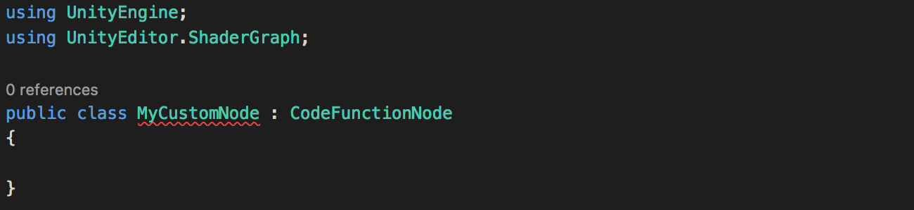
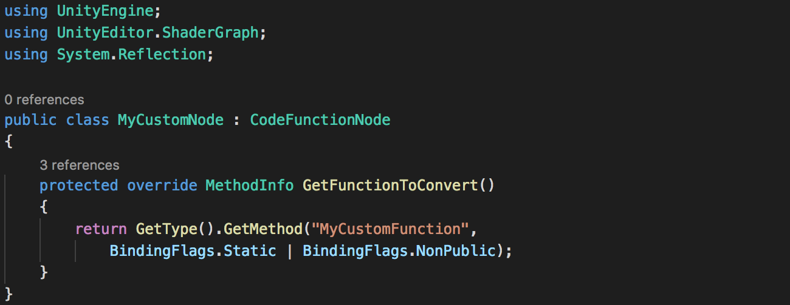
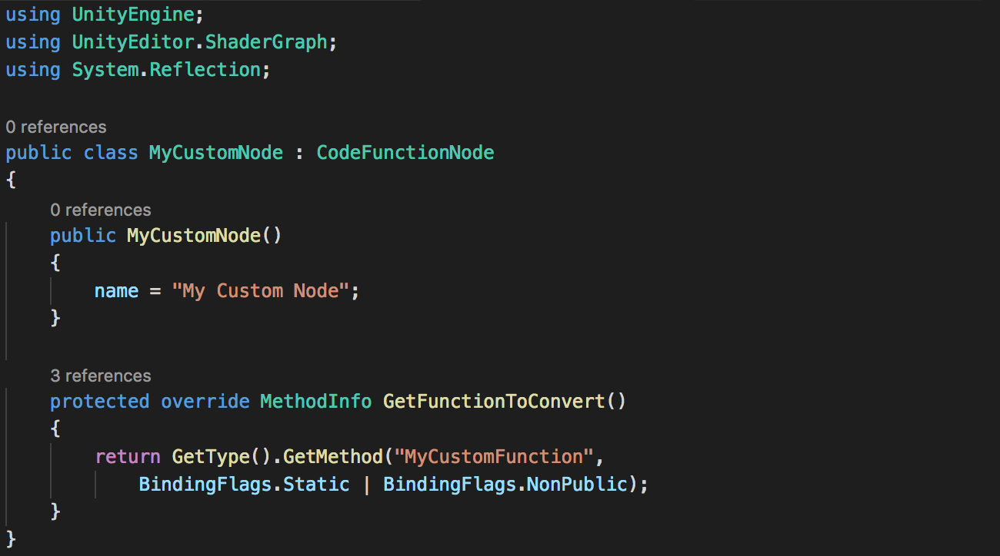
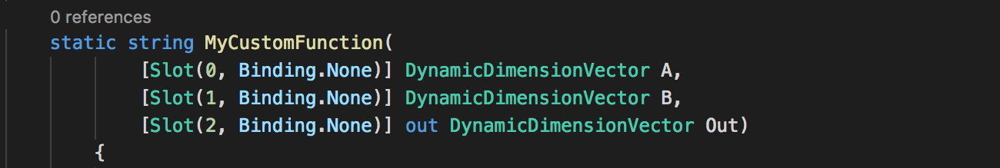
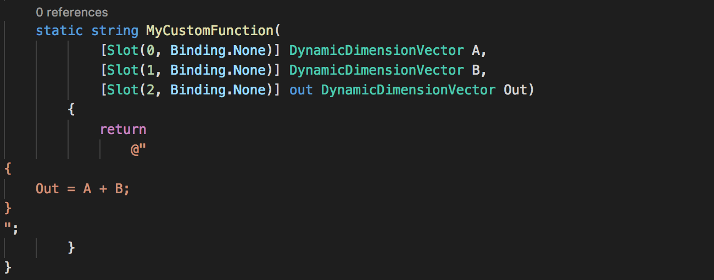
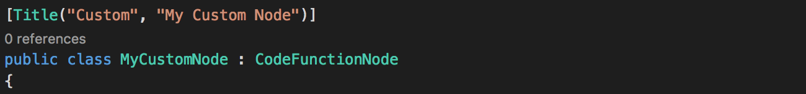
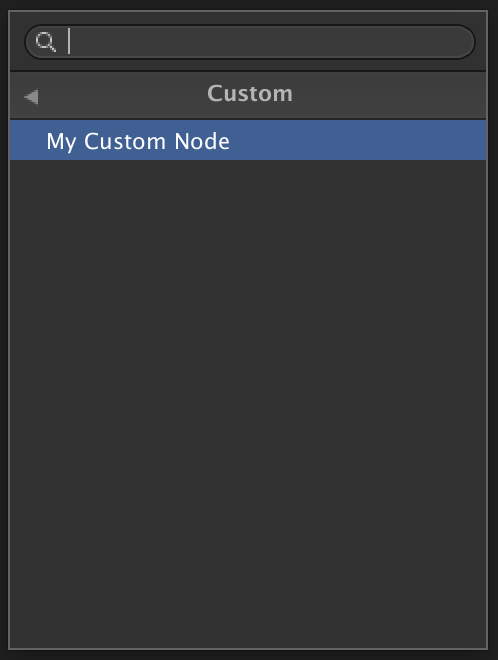
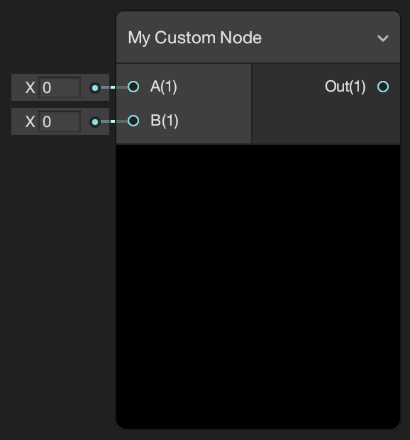
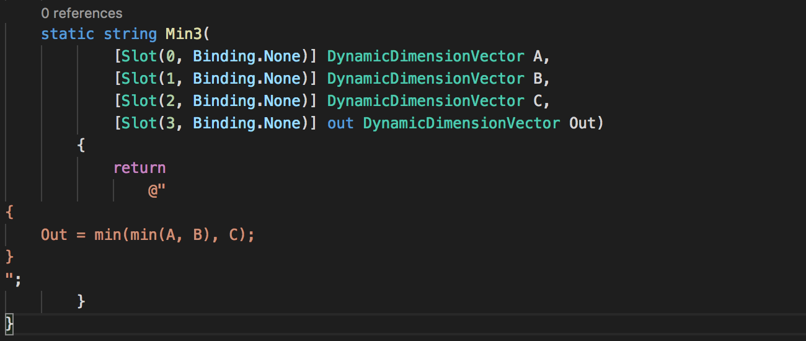
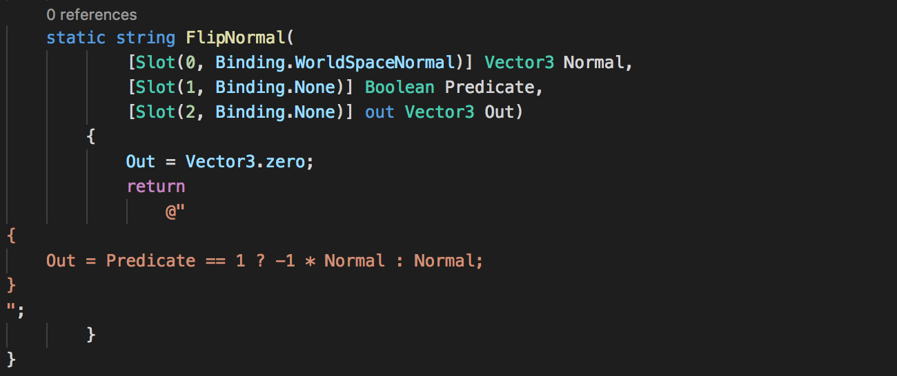

Custom Nodes
With the recent release of Shader Graph it is now easier than ever to create custom shaders in Unity. However, regardless of how many different Nodes we offer by default, we can’t possibly cater for everything you might want to make. For this reason we have developed a Custom Node API for you to use to make new Nodes in C#. This allows you to extend Shader Graph to suit your needs.
In this article we will take a look at one of the ways you can accomplish this. It is the simplest way to create custom Nodes that create shader functions. We call it the Code Function Node. Let’s take a look at how to create a new Node using this method.
Lets start by creating a new C# script. For this example I have named the script MyCustomNode. To use the Code Function Node API you need to include (or add the class to.md) the namespace UnityEditor.ShaderGraph and inherit from the base class CodeFunctionNode.

The first thing you will notice is that MyCustomNode is highlighted with an error. If we hover over the message we see that we need to implement an inherited member called GetFunctionToConvert. The base class CodeFunctionNode handles most of the work that needs to be done to tell the Shader Graph how to process this Node but we still need to tell it what the resulting function should be, this is how we will do this.
The method GetFunctionToConvert uses Reflection to convert another method into an instance of MethodInfo that CodeFunctionNode can convert for use in Shader Graph. This simply allows us to write the shader function we want in a more intuitive way.
For more information on Reflection see: Reflection (C#.md)
Add the namespace System.Reflection and the override function GetFunctionToConvert as shown in the image below. Note the string that reads MyCustomFunction, this will be the name of the function that is written into the final shader. This can be named whatever you wish to suit the function you are writing and can be anything that doesn’t begin with a numeric character, but for the rest of this article we will assume its name is MyCustomFunction.

Now our script errors are resolved we can start working on the functionality of our new Node! Before we continue we should name it. To do this add a public constructor for the class with no arguments. In it, set the variable name to a string that contains the title of your Node. This will be displayed in the title bar of the Node when it appears in a graph. For this example we will call the Node My Custom Node.

Next we will define the Node’s function itself. If you are familiar with Reflection you will notice that the method GetFunctionToConvert is attempting to access a method in this class called MyCustomFunction. This is the method that will define the shader function itself.
Lets create a new static method of return type string with the same name as the string in the method GetFunctionToConvert. In the case of this tutorial that will be MyCustomFunction. In the arguments of this method we can define what Ports we want the Node to have, these will map directly to the arguments in the final shader function. We do this by adding an argument of a type supported in Shader Graph with a Slot Attribute. For now lets add two argument of type DynamicDimensionVector called A and B and another out argument of type DynamicDimensionVector called Out. Then we will add a default Slot Attribute to each of these arguments. Each Slot Attribute needs a unique index and a Binding, which we will set to None.

For a full list of Types and Bindings that are supported see the CodeFunctionNode API documentation.
In this method we will define the contents of the shader function in the return string. This needs to contain the braces of the shader function and the HLSL code we wish to include. For this example lets define Out = A + B;. The method we just created should look like this:

This is exactly the same C# code that is used in the Add Node that comes with Shader Graph.
There is one last thing we need to do before we have a working Node. That is tell it where to appear in the Create Node Menu. We do this by adding the Title Attribute above the class. In this we define an string array that describes where it should appear in the hierarchy in the menu. The last string in this array defines what the Node should be called in the Create Node Menu. For this example we will call the Node My Custom Node and place it in the folder Custom.

Now we have a working Node! If we return to Unity, let the script compile then open Shader Graph we will see the new Node in the Create Node Menu.

Create an instance of the Node in the Shader Graph. You will see it has the Ports we defined with the same names and Types as the arguments to the MyCustomFunction class.

Now we can create all kinds of different Nodes by using different Port types and Bindings. The return string of the method can contain any valid HLSL in a regular Unity shader. Here is a Node that returns the smallest of the three input values:

And here is a Node that inverts normals based on a Boolean input. Note in this example how the Port Normal has a Binding for WorldSpaceNormal. When there is no Edge connected to this Port it will use the mesh’s world space normal vector by default. For more information see the Port Binding documentation. Also note how when using a concrete output type like Vector 3 we have to define it before we return the shader function.

Now you are ready to try making Nodes in Shader Graph using Code Function Node! But this is, of course, just the beginning. There is much more you can do in Shader Graph to customize the system. For more information see the rest of this documentation and the Scripting API.